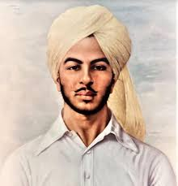
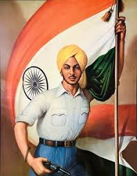

BHAGAT SINGH

Bhagat Singh was a brave and passionate freedom fighter who played a
significant role in India's struggle for independence from British
rule. Born in 1907, he was deeply inspired by the sacrifices of
earlier revolutionaries and grew up with a strong desire to see India
free from colonial oppression. Bhagat Singh became a symbol of courage
and patriotism, inspiring millions of Indians to join the fight for
freedom.
At a young age, Bhagat Singh became involved in revolutionary activities
against British rule. He believed in using revolutionary means to
overthrow British imperialism and establish a free India. Bhagat Singh
was a member of the Hindustan Socialist Republican Association (HSRA),
which advocated for complete independence through revolutionary means.

One of the most iconic moments in Bhagat Singh's life was his
involvement in the Lahore Conspiracy Case and the bombing of the
Central Legislative Assembly in 1929. Despite knowing the risks,
Bhagat Singh fearlessly stood up against the British oppressors,
willing to sacrifice his life for the cause of freedom. His bravery,
sacrifice, and unwavering dedication to the nation continue to inspire
people of all ages to stand up for justice and fight against
oppression.